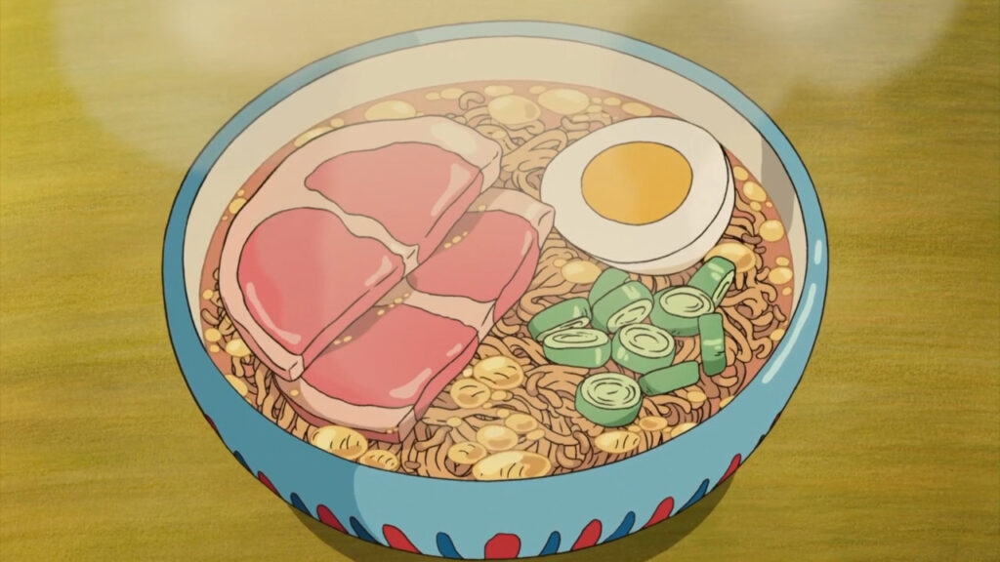

¡BIENVENIDO AL RINCÓN DE LAS RECETAS DEL STUDIO GHIBLI!
Sumérgete en un mundo de sabores extraordinarios y crea tus propias aventuras culinarias con nuestras detalladas guías inspiradas en las películas más queridas de Studio Ghibli.
Bento
Mi vecino totoro
¿Alguna vez has comido una comida que se ve demasiado hermosa para comerla? Si es así, es posible que haya experimentado el arte de hacer bento.

